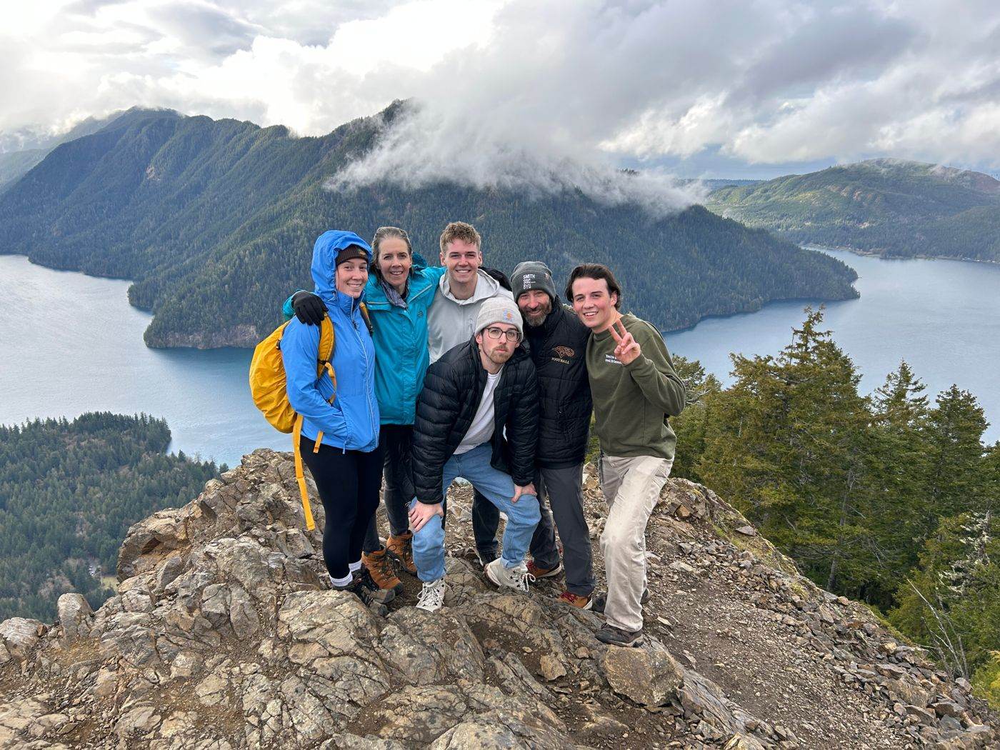
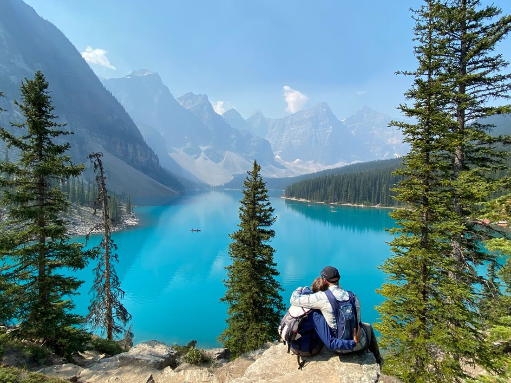
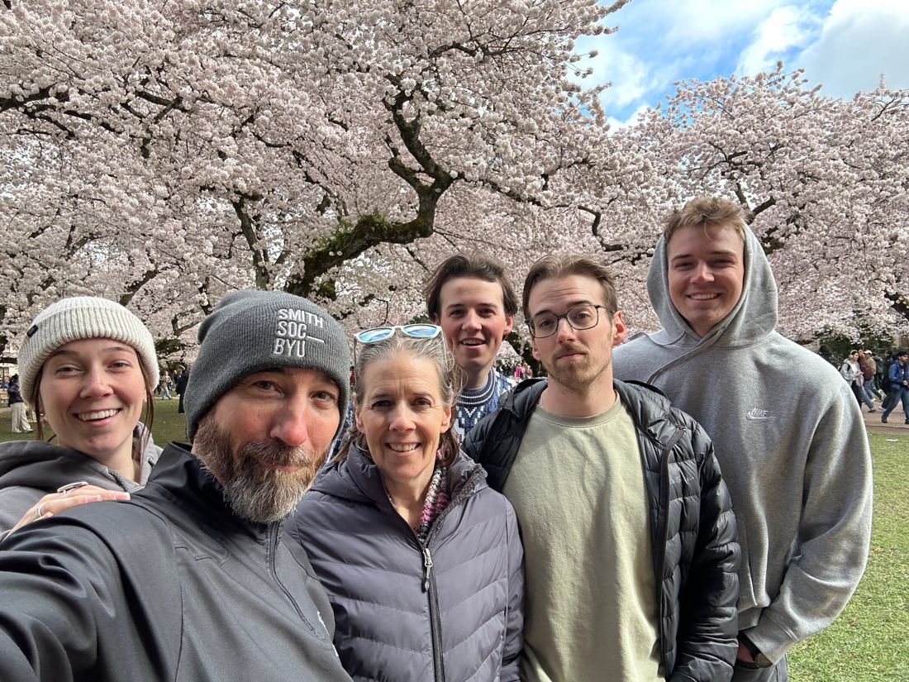
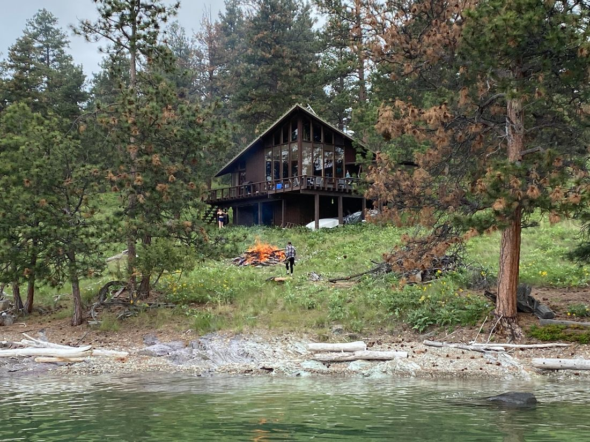
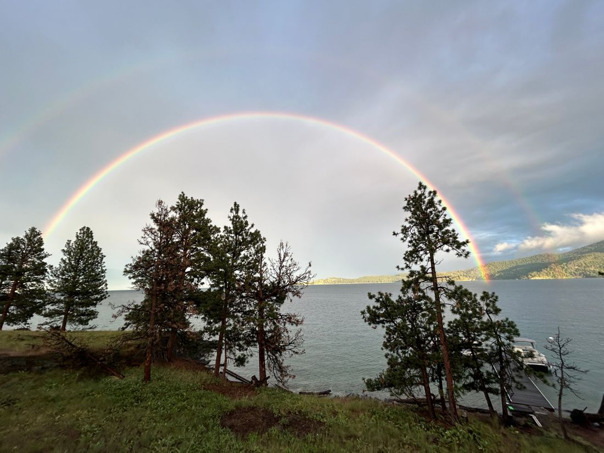
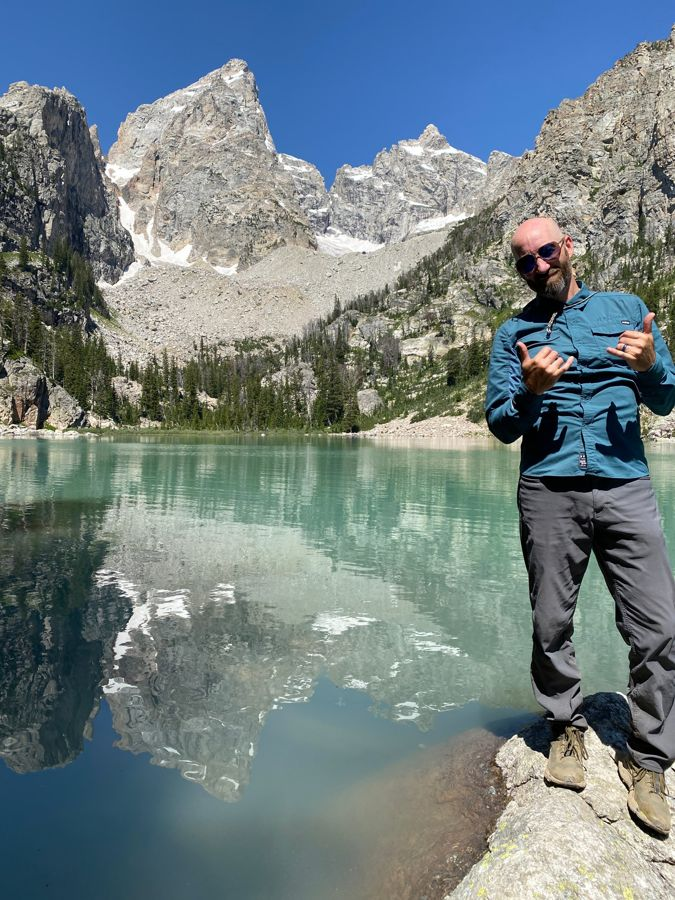
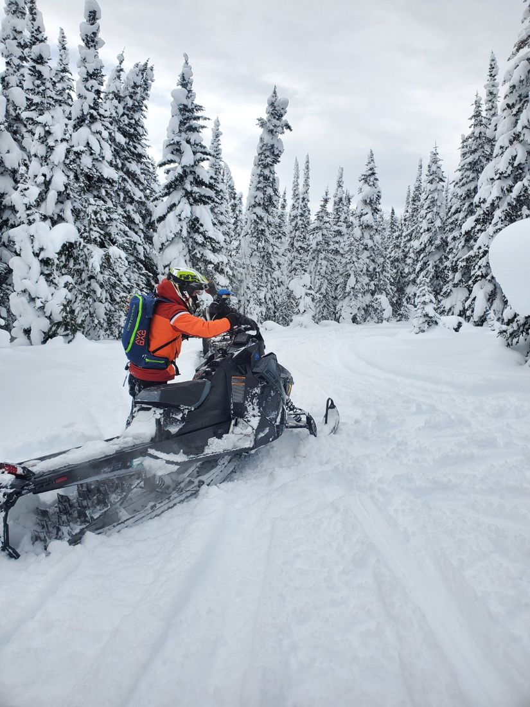
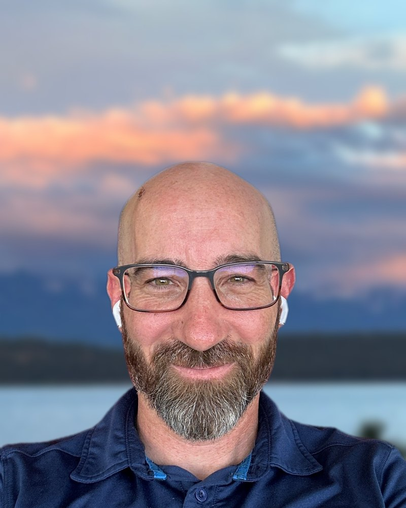
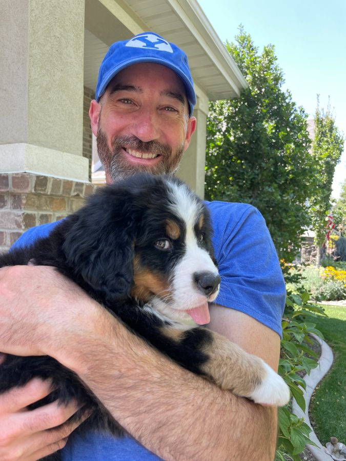

Misty and our four kids
Everything good in my life starts here: my wife, Misty, and our kids, Herbie, Teddy, Donna, and Dash. Some of our best days together have been at the top of a long trail.


Seeing the world together
Misty and I love finding beautiful places, whether that's a turquoise lake high in the mountains or a spring afternoon under the cherry blossoms with the whole crew.


The family cabin
Our cabin in Montana is my favorite place on earth: tall pines, quiet mornings on the water, the dock in the evening, and every now and then a double rainbow over the lake.


Happiest on a trail or in the snow
I love to hike, backpack, and canyoneer in the summer, and to ski and snowmobile in the winter. There's something about wild places that makes it easier for me to notice God.

The classroom and the church
I teach finance at BYU. I'm a member of The Church of Jesus Christ of Latter-day Saints with strong ecumenical leanings, and I love learning from Christians of every tradition.
- TeachingFinance professor, BYU
- FaithLatter-day Saint, ecumenical at heart
Curious about my non-spiritual work? Tools I've built for economics, investing, my finance classes, and even snowmobiling live on my site stack.

And King Louie
No family story is complete without the dog. Meet King Louie.